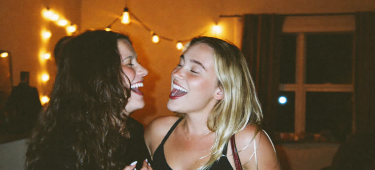
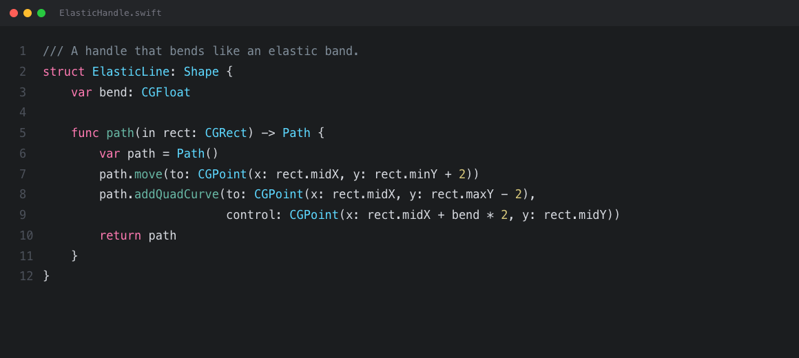

chloe.m· 3:01

Liked by jake and 23 others
chloe.m girls' night with @emma 💕
ChloeNo messages yet
Every screenshot you take lands in a drawer at the edge of the screen. Pick several and paste them all at once.
GitHubcurl -fsSL https://raw.githubusercontent.com/Frasca-99/gaveta/main/scripts/get.sh | bash
Free · macOS 14+
chloe.m· 3:01

Liked by jake and 23 others
chloe.m girls' night with @emma 💕

Take a screenshot
Choose Window and click any window.
Step 1 of 3